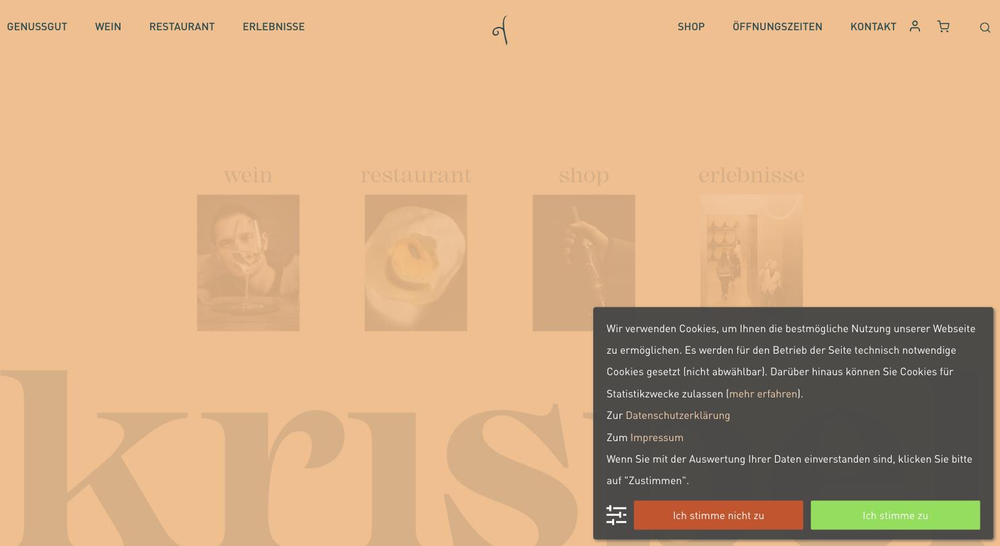
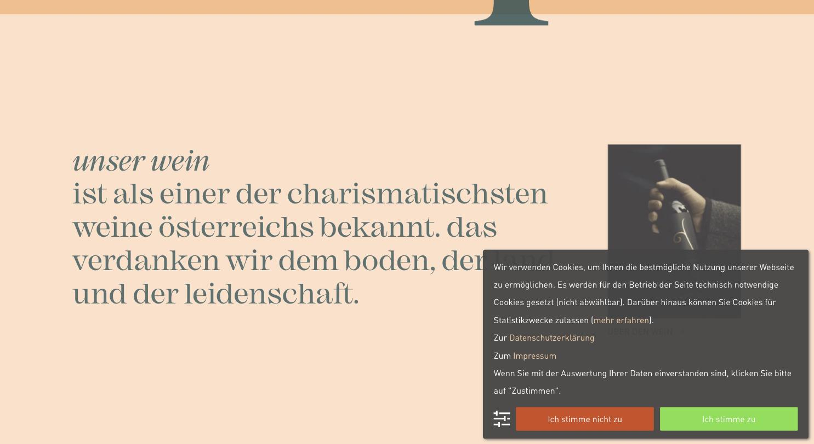

Der gestalterisch stärkste österreichische Auftritt der Liste.
Hier hat jemand eine Marke gebaut, keine Website. Aprikose auf Creme mit Petrol als Gegenpol, eine kursive Serif (Mackay) für die emotionalen Zeilen, DIN Pro in 79 px für die lauten, und alles konsequent kleingeschrieben. Der Schriftzug „krispel“ läuft als riesiges Wasserzeichen durch den Hintergrund. Die Navigation ist nach Geschäftsbereichen sortiert – Genussgut, Wein, Restaurant, Erlebnisse – der Shop ist rechts angesetzt, nicht im Zentrum. Genau diese Struktur passt zu einem Weingut mit Verkostung und Gastronomie. Einzige Einschränkung: Die Tonalität ist warm-verspielt, nicht luxuriös – für „premium“ müsste die Farbwelt kühler und dunkler werden.
#fff3e8Creme (Grundfläche)#f9bc88Aprikose (Marke)#fee0c9Aprikose hell#204c52Petrol (Typo)#d04c20Orangerot (Akzent)Mackay (Serif, kursiv für Kicker) + DIN Pro (Headlines und Body)
| Rolle | Spezifikation & Beispiel |
|---|---|
| H2 | DIN Pro 79/84 px · w400 · UPPERCASE · #204c52 Große Sektionstitel |
| Kicker | Mackay kursiv · #204c52 unser wein |
| H3 | DIN Pro 25/38 px · w500 · UPPERCASE Zwischenzeile |
| Body | DIN Pro 16/24 px · w400 · #204c52 Fließtext |
| Nav | DIN Pro 16 px · UPPERCASE · #f9bc88 GENUSSGUT / WEIN / RESTAURANT |
Volle Breite ohne harten Container, Seitenlänge 11.340 px. Vier Einstiegskacheln direkt unter dem Header (wein / restaurant / shop / erlebnisse), danach großflächige Farbfelder.
14 Bilder, überwiegend 3:4 Hochformat, 2 Videos. Menschen bei Tisch, Hände, Detailaufnahmen – durchgehend warme Farbstimmung, sehr konsistent.
Shop ist gleichrangig, aber nicht dominant. Warenkorb und Konto als Icons rechts, Buttons als Outline mit 1,5 px Linie, keine Flächen.
Sanfte Parallax-Effekte, Hover-Zoom auf den Einstiegskacheln.

